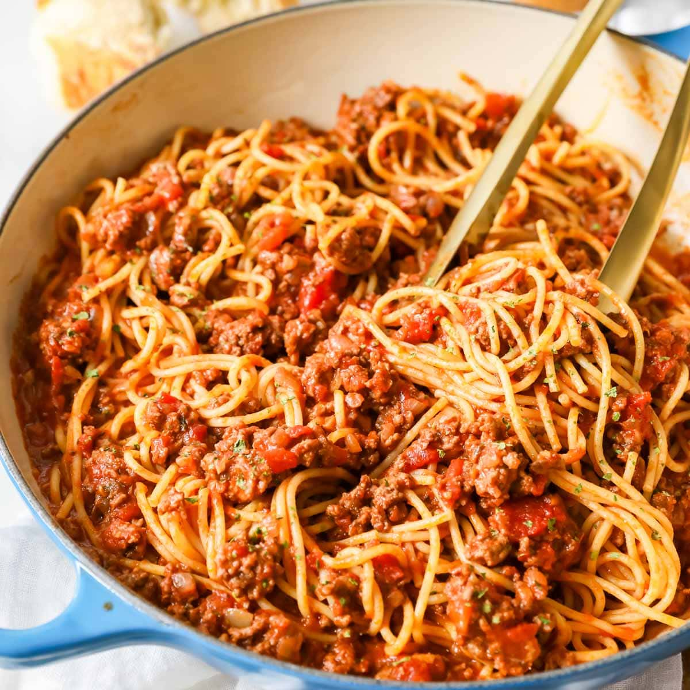

Spaghetti with Meat Sauce

Description
This recipe will show you how to make an easy dinner: Spaghetti with Meat Sauce.
Ingredients
- Ground beef of your choice. I prefer grass-fed 80/20.
- Pasta. I prefer Angel Hair pasta.
- Pasta Sauce. I like to use Rao's pasta sauce. There are also great option online to make your own.
- Zucchini Squash
- Portobello Mushrooms
- Pamasean Cheese (optional)
- Bell Peppers
- White Onion
Steps
- Bring water to boil. Add pasta. Cook for desired firmness.
- Brown the beef.
- While beef browns, heat up pasta sauce in sauce pan.
- Dice and sautee mushrooms with salt and pepper.
- Dice onions, zuchhini squash and bell peppers.
- After mushrooms have cooked 3-5 minutes, add other vegetables. Cook until softened. Add to pasta sauce.
- Plate pasta. Then beef. Then sauce.
- Garnish with parmasean.
- Enjoy!